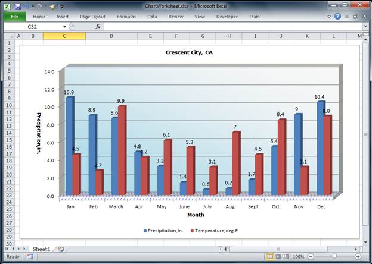

Essential XlsIO allows users to modify side wall, back wall, and floor settings of a 3-D chart. The following code example explains how to apply these settings to the 3-D chart.
|
[C#] //Instantiate the spreadsheet creation engine ExcelEngine excelEngine = new ExcelEngine();
//Create a new workbook (similar to creating a new workbook in Excel) //Open a workbook including data IWorkbook workbook = excelEngine.Excel.Workbooks.Open(@"EmbeddedChart.xlsx");
//The first worksheet object in the worksheet collection is accessed. IWorksheet sheet = workbook.Worksheets[0]; sheet.Name = "Sample";
//Add a new chart to the existing worksheet IChartShape chart = workbook.Worksheets[0].Charts[0];
//Set chart series IChartSerie serieOne = chart.Series[0]; IChartSerie serieTwo = chart.Series[1];
//Set fill type of chart back wall chart.BackWall.Fill.FillType = ExcelFillType.Gradient;
//Set fill options for the back wall chart.BackWall.Fill.GradientColorType = ExcelGradientColor.TwoColor; chart.BackWall.Fill.GradientStyle = ExcelGradientStyle.Diagonl_Down;
//Set the foreground and background color of the back wall chart.BackWall.Fill.ForeColor = System.Drawing.Color.WhiteSmoke; chart.BackWall.Fill.BackColor = System.Drawing.Color.LightBlue;
//Set the border line color of the back wall chart.BackWall.Border.LineColor = System.Drawing.Color.Wheat;
//Set thickness of the back wall chart.BackWall.Thickness = 10;
//Set fill type of side wall chart.SideWall.Fill.FillType = ExcelFillType.SolidColor;
//Set the foreground and background colors of the side wall chart.SideWall.Fill.BackColor = System.Drawing.Color.White; chart.SideWall.Fill.ForeColor = System.Drawing.Color.White;
//Set border line color of the side wall chart.SideWall.Border.LineColor = System.Drawing.Color.Beige;
//Set fill type of floor chart.Floor.Fill.FillType = ExcelFillType.Pattern;
//Set pattern type of the floor chart.Floor.Fill.Pattern = ExcelGradientPattern.Pat_Divot;
//Set the foreground and background color of the floor chart.Floor.Fill.ForeColor = System.Drawing.Color.Blue; chart.Floor.Fill.BackColor = System.Drawing.Color.White;
//Set thickness of the floor chart.Floor.Thickness = 3;
//Show value as data labels serieOne.DataPoints.DefaultDataPoint.DataLabels.IsValue = true; serieTwo.DataPoints.DefaultDataPoint.DataLabels.IsValue = true;
//Set embedded chart positions chart.TopRow = 2; chart.BottomRow = 30; chart.LeftColumn = 5; chart.RightColumn = 18; serieTwo.Name = "Temperature,deg.F";
//Set chart legends chart.Legend.Position = ExcelLegendPosition.Right; chart.Legend.IsVerticalLegend = false;
//Save the workbook workbook.SaveAs("Sample.xlsx");
|
|
[VB.NET]
'Instantiate the spreadsheet creation engine Dim excelEngine As New ExcelEngine()
'Create a new workbook (similar to creating a new workbook in Excel) 'Open a workbook including data Dim workbook As IWorkbook = excelEngine.Excel.Workbooks.Open("EmbeddedChart.xlsx")
'The first worksheet object in the worksheet collection is accessed. Dim sheet As IWorksheet = workbook.Worksheets(0) sheet.Name = "Sample"
'Add a new chart to the existing worksheet Dim chart As IChartShape = workbook.Worksheets(0).Charts(0)
'Set chart series Dim serieOne As IChartSerie = chart.Series(0) Dim serieTwo As IChartSerie = chart.Series(1)
'Set fill type of back wall chart.BackWall.Fill.FillType = ExcelFillType.Gradient
'Set fill options for the back wall chart.BackWall.Fill.GradientColorType = ExcelGradientColor.TwoColor chart.BackWall.Fill.GradientStyle = ExcelGradientStyle.Diagonl_Down
'set the foreground and background color of the back wall chart.BackWall.Fill.ForeColor = System.Drawing.Color.WhiteSmoke chart.BackWall.Fill.BackColor = System.Drawing.Color.LightBlue
'Set border line color of the back wall chart.BackWall.Border.LineColor = System.Drawing.Color.Wheat
'Set thickness of the back wall chart.BackWall.Thickness = 10
'Set fill type of side wall chart.SideWall.Fill.FillType = ExcelFillType.SolidColor
'Set foreground and backcolor of the side wall chart.SideWall.Fill.BackColor = System.Drawing.Color.White chart.SideWall.Fill.ForeColor = System.Drawing.Color.White
'Set border line color of the side wall chart.SideWall.Border.LineColor = System.Drawing.Color.Beige
'Set fill type of floor chart.Floor.Fill.FillType = ExcelFillType.Pattern
'Set pattern type of the floor chart.Floor.Fill.Pattern = ExcelGradientPattern.Pat_Divot
'Set foreground and background color of the floor chart.Floor.Fill.ForeColor = System.Drawing.Color.Blue chart.Floor.Fill.BackColor = System.Drawing.Color.White
'Set thickness of the floor chart.Floor.Thickness = 3
'Show value as data labels serieOne.DataPoints.DefaultDataPoint.DataLabels.IsValue = True serieTwo.DataPoints.DefaultDataPoint.DataLabels.IsValue = True
'Set embedded chart positions chart.TopRow = 2 chart.BottomRow = 30 chart.LeftColumn = 5 chart.RightColumn = 18 serieTwo.Name = "Temperature,deg.F"
'Set chart legends chart.Legend.Position = ExcelLegendPosition.Right chart.Legend.IsVerticalLegend = False
'Save the workbook workbook.SaveAs("Sample.xlsx") |

Figure 78: 3-D Chart Applied with Wall Settings